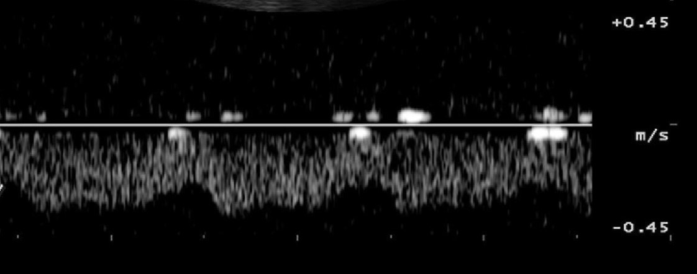

Question 1
Front
The waveform from an abdominal vessel displays what two characteristics?
Study Mode
Not answered yet

Answer: B. mild phasicity and pulsatility
Feedback:
The waveform displays mild respiratory variation (phasicity) and pulsatility in a normal renal vein. Please note that the definition of pulsatility indicates regular variations in flow. Not all pulsatility in venous flow is a result of the ripple effects of cardiac contraction. These findings are considered normal in renal vessels. If venous congestion occurs, the flow will become increasingly pulsatile and flow reversal can develop during atrial contraction.
The waveform displays mild respiratory variation (phasicity) and pulsatility in a normal renal vein. Please note that the definition of pulsatility indicates regular variations in flow. Not all pulsatility in venous flow is a result of the ripple effects of cardiac contraction. These findings are considered normal in renal vessels. If venous congestion occurs, the flow will become increasingly pulsatile and flow reversal can develop during atrial contraction.